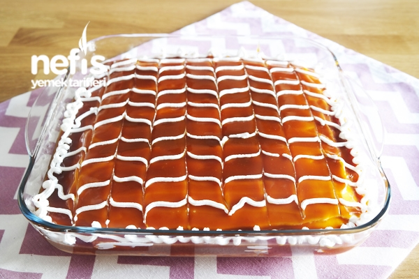
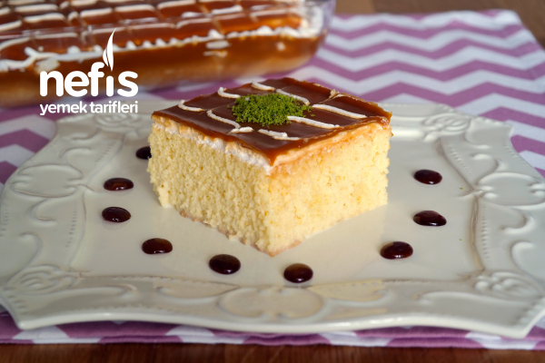

Karamelli trileçe nasıl yapılır? Merak edenler için Zeynep'in Tarifleri'nden lezzet garantili, tam ölçülü harika bir tarif ile geldik!😍
Yapımı her ne kadar aşamalı olsa da herkesin güzel sonuçlar alacağı kadar kolay trileçe tarifinin yumuşacık keki ve damakta iz bırakacak karamelli sosunu sizler de çok seveceksiniz.
Malzemeler
5 adet yumurta
1 su bardağından 1 parmak eksik şeker
1,5 su bardağı un
1 paket kabartma tozu
1 paket vanilya
Sütlü sosu için;
3,5 su bardağı süt (700 ml)
3 yemek kaşığı toz şeker
200 ml sıvı krema
Karamel sosu için;
1 çay bardağı şeker
2 yemek kaşığı tereyağı
200 ml sıvı krema
Üzeri için;
1 paket krem şanti
1 su bardağı soğuk süt (200 ml)

Hazırlanışı
- İlk olarak tatlının keki için karıştırma kabına 5 tane yumurta ve 1 su bardağından bir parmak kadar eksik toz şekeri alalım.
- Yumurta ve şekeri köpük köpük oluncaya kadar yaklaşık 5 dakika kadar çırpalım.
- Ardından 1,5 su bardağı un, 1 paket kabartma tozu, 1 paket vanilya ekleyerek malzemeleri spatulayla güzelce karıştıralım.
- Kek hamurumuz hazır. Şimdi keki pişireceğimiz borcamın boyutuna göre pişirme kağıdının kenarlarından keselim ve içerisine yerleştirelim. Benim kullandığım borccam 28/28 santimetre boyutlarında.
- Kek hamurunu fırın kabına boşaltalım ve hamurun her yere eşit şekilde dağılması için kabı şöyle bir sallayarak güzelce yayalım.
- Ardından 170 derece ısıttığımız fırında önce 10 dakika, daha sonra fırının sıcaklığını 150 dereceye düşürerek 30 dakika daha pişirelim.
- Bu sırada karamel sosu için 1 çay bardağı toz şekeri küçük bir tencereye veya sos tavasına alalım.
- Ara ara sallayarak şeker iyice eriyip karamel rengini alıncaya kadar bekleyelim.
- Şeker tamamen eridikten sonra ocağın altını kısalım ve 2 yemek kaşığı kadar tereyağını ilave edip karıştıralım.
- Önce tereyağının erimesini sağlayalım.
- Ardından 200 mililitre sıvı kremayı ekleyerek sosumuz kıvam alıncaya kadar sürekli karıştırarak pişirelim.
- Sosumuzu hızlıca soğuması için ısıya dayanıklı bir kabın içerisine alarak bir kenarda beklemeye bırakalım.
- Diğer taraftan keki ıslatacağımız sos için 3,5 su bardağı süt, 3 yemek kaşığı toz şeker ve 200 mililitre sıvı kremayı bir kabın içerisine alalım.
- Şeker eriyinceye kadar karıştıralım.
- Fırından aldığımız kekin ilk sıcaklığı çıktıktan sonra üzerinden pişirme kağıdını çıkartalım.
- Şerbetini daha iyi çekmesi için üzerine kürdanla delikler açalım.
- Sütün tamamını kekin üzerine gezdirerek dökelim ve sütü iyice çekmesi için dinlenmeye bırakalım.
- Krem şantisi için uygun bir kapta 1 su bardağı soğuk süt ve 1 paket krem şantiyi alalım.
- Mikser yardımıyla iyice çırpalım. Ardından 1-2 yemek kaşığı kadar krem şantiyi ayrı bir kaseye ayıralım.
- Ayırdığımız krem şantiyi buzdolabına kaldırarak kalanını kekin üzerine dökelim. Her yerine eşit bir şekilde yayalım.
- Krem şantiyi eşit bir şekilde yaydıktan sonra tamamen soğuyan karamel sosunu da tatlının üzerine gezdirerek dökelim.
- Yine aynı şekilde pasta sıvama aparatı veya spatula ile üzerini düzeltelim. Çok önemli bir not karamel sosunun da tamamen soğuk olması gerekiyor. Eğer sıcak olursa krem şantiyi eriteceği için hoş olmayan bir görüntü ortaya çıkabilir.
- Ayırdığımız krem şantiyle tatlının üzerine ince ince çizgiler çekelim.
- Son olarak bir kürdan yardımıyla çizdiğimiz çizgilere dik olacak şekilde çizikler atalım.
- Tatlımızı güzelce dinlenmesi için birkaç saat buzdolabına kaldıralım.
- Güzelce dinlendirdiğimiz karamelli trileçemiz servise hazır. Tatlıyı dilediğimiz boyutta dilimlere ayırarak servis edebilirsiniz.
